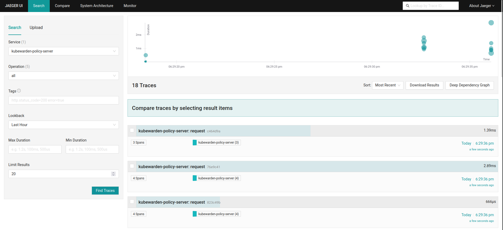

|
この文書は自動機械翻訳技術を使用して翻訳されています。 正確な翻訳を提供するように努めておりますが、翻訳された内容の完全性、正確性、信頼性については一切保証いたしません。 相違がある場合は、元の英語版 英語 が優先され、正式なテキストとなります。 |
|
これは未公開の文書です Admission Controller 1.34-dev. |
カスタムOpenTelemetryコレクター
このガイドでは、クラスターにすでにデプロイされているOpenTelemetryコレクターにテレメトリーデータを送信するためにAdmission Controllerを設定する方法を説明します。
クラスター内にhttps://opentelemetry.io/docs/collector/[OpenTelemetry Collector]のインスタンスを1つだけデプロイする必要があります。
依存関係をインストールする
まず、OpenTelemetryコレクターの依存関係をインストールすることから始めます。
SUSE Security Admission Controllerコンポーネントとコレクター間で暗号化された通信が必要です。安全な通信に必要なすべての証明書を管理するためにhttps://cert-manager.io/[cert-manager]を使用できます。
OpenTelemetryコレクターのトレースは、https://www.jaegertracing.io/[Jaeger]インスタンスに送信されます。
Admission Controllerスタックは、OpenTelemetryコレクターにメトリクスを送信します。 このメトリクスは、Prometheusエンドポイントとして公開されます。メトリクスは、その後Prometheusインスタンスによって収集され、データベースに保存されます。同じPrometheusインスタンスは、メトリクスを表示および使用するためのUIも公開します。
作成したリソースは、`kubewarden`ネームスペースで定義されるか、その存在が期待されます。そのため、ネームスペースを作成することから始めるべきです：
kubectl create namespace kubewardencert-managerとOpenTelemetryをインストールする
このようにしてcert-managerとOpenTelemetryオペレーターをインストールします：
helm repo add jetstack https://charts.jetstack.io
helm install --wait \
--namespace cert-manager \
--create-namespace \
--set crds.enabled=true \
--version 1.18.2 \
cert-manager jetstack/cert-manager
helm repo add open-telemetry https://open-telemetry.github.io/opentelemetry-helm-charts
helm install --wait \
--namespace open-telemetry \
--create-namespace \
--version 0.97.1 \
--set "manager.collectorImage.repository=otel/opentelemetry-collector-contrib" \
my-opentelemetry-operator open-telemetry/opentelemetry-operatorAdmission ControllerコンポーネントとOpenTelemetryコレクター間の通信をmTLSを使用して設定します。
それを行うには、全体の公開鍵インフラストラクチャ (PKI) を作成する必要があります：
# pki.yaml file
apiVersion: cert-manager.io/v1
kind: Certificate
metadata:
name: my-client-certificate
namespace: kubewarden
spec:
dnsNames:
- kubewarden.kubewarden.svc
- kubewarden.kubewarden.svc.cluster.local
issuerRef:
kind: Issuer
name: my-selfsigned-issuer
secretName: my-client-cert
---
apiVersion: cert-manager.io/v1
kind: Certificate
metadata:
name: my-certificate
namespace: kubewarden
spec:
dnsNames:
- my-collector-collector.kubewarden.svc
- my-collector-collector.kubewarden.svc.cluster.local
issuerRef:
kind: Issuer
name: my-selfsigned-issuer
secretName: my-server-cert
---
apiVersion: cert-manager.io/v1
kind: Issuer
metadata:
name: my-selfsigned-issuer
namespace: kubewarden
spec:
selfSigned: {}マニフェストを適用します：
kubectl apply -f pki.yamlJaeger と Prometheus をインストールします
その後、トレースイベントを保存し、可視化するために Jaeger をインストールします。
helm repo add jaegertracing https://jaegertracing.github.io/helm-charts
helm upgrade -i --wait \
--namespace jaeger \
--create-namespace \
--version 2.57.0 \
jaeger-operator jaegertracing/jaeger-operator \
--set rbac.clusterRole=true
kubectl apply -f - <<EOF
apiVersion: jaegertracing.io/v1
kind: Jaeger
metadata:
name: my-open-telemetry
namespace: jaeger
spec: {}
EOFOpenTelemetry のクイックスタートで Traefik をインストールした場合は、次の Ingress を使用して Jaeger クエリ UI を公開します：
kubectl apply -f - <<EOF +
apiVersion: networking.k8s.io/v1 +
kind:Ingress +
metadata: +
name: my-open-telemetry-query +
namespace: jaeger +
spec: +
ingressClassName: traefik +
rules: +
- http: +
paths: +
- path: / +
pathType:Prefix +
backend: +
service: +
name: my-open-telemetry-query +
port: +
number:16686 +
EOF
次に、メトリクスを保存し、可視化するために Prometheus をインストールします。
cat <<EOF > kube-prometheus-stack-values.yaml
prometheus:
additionalServiceMonitors:
- name: kubewarden
selector:
matchLabels:
app.kubernetes.io/instance: kubewarden.my-collector
namespaceSelector:
matchNames:
- kubewarden
endpoints:
- port: prometheus
interval: 10s
EOF
helm repo add prometheus-community https://prometheus-community.github.io/helm-charts
helm install --wait --create-namespace \
--namespace prometheus \
--version 77.13.0 \
--values kube-prometheus-stack-values.yaml \
prometheus prometheus-community/kube-prometheus-stack|
Prometheus サービスモニターは、Admission Controller メトリクスを取得するために、 |
OpenTelemetry コレクターをインストールします
これで、kubewarden ネームスペースにカスタム OpenTelemetry コレクターをデプロイできます。
# otel-collector.yaml file
apiVersion: opentelemetry.io/v1beta1
kind: OpenTelemetryCollector
metadata:
name: my-collector
namespace: kubewarden
spec:
mode: deployment # This configuration is omittable.
volumes:
- name: server-certificate
secret:
secretName: my-server-cert
- name: client-certificate
secret:
secretName: my-client-cert
volumeMounts:
- name: server-certificate
mountPath: /tmp/etc/ssl/certs/my-server-cert
readOnly: true
- name: client-certificate
mountPath: /tmp/etc/ssl/certs/my-client-cert
readOnly: true
config:
receivers:
otlp:
protocols:
grpc:
tls:
cert_file: /tmp/etc/ssl/certs/my-server-cert/tls.crt
key_file: /tmp/etc/ssl/certs/my-server-cert/tls.key
client_ca_file: /tmp/etc/ssl/certs/my-client-cert/ca.crt
processors: {}
exporters:
debug:
verbosity: normal
prometheus:
endpoint: ":8080"
otlp/jaeger:
endpoint: "my-open-telemetry-collector.jaeger.svc.cluster.local:4317"
tls:
insecure: true
service:
pipelines:
metrics:
receivers: [otlp]
processors: []
exporters: [debug, prometheus]
traces:
receivers: [otlp]
processors: []
exporters: [debug, otlp/jaeger]マニフェストを適用します：
kubectl apply -f otel-collector.yamlその構成は、トレースイベントを受信し、Jaeger に転送するための単純な処理パイプラインを使用します。また、メトリクスを受信し、Prometheus による収集のために公開します。
mTLS を使用して、Admission Controller スタックと OpenTelemetry コレクター間の通信を保護します。ただし、例の複雑さを減らすために、OpenTelemetry コレクターと Jaeger 間の通信は保護されていません。
Admission Controller スタックをインストールします
OpenTelemetry コレクターが実行されているときは、通常の方法で Admission Controller をデプロイできます。
Admission Controller コンポーネントを構成して、イベントとメトリクスを OpenTelemetry コレクターに送信する必要があります。
# values.yaml
telemetry:
mode: custom
metrics: True
tracing: True
custom:
endpoint: "https://my-collector-collector.kubewarden.svc:4317"
insecure: false
otelCollectorCertificateSecret: "my-server-cert"
otelCollectorClientCertificateSecret: "my-client-cert"`otelCollectorCertificateSecret`キーによって参照されるシークレットには、`ca.crt`という名前のエントリが必要です。それは、OpenTelemetry Collectorによって使用される証明書を発行したCAの証明書を保持しています。
`otelCollectorClientCertificateSecret`キーによって参照されるシークレットには、次のエントリが必要です：`tls.crt`および`tls.key`キー。これらは、OpenTelemetry Collectorに対して認証するためにAdmission Controllerスタックによって使用されるクライアント証明書とそのキーです。
暗号化やmTLSを使用しない場合は、これらの値を空のままにしてください。
Admission Controllerスタックをインストールします：
helm install --wait \
--namespace kubewarden --create-namespace \
kubewarden-crds kubewarden/kubewarden-crds
helm install --wait \
--namespace kubewarden \
--create-namespace \
--values values.yaml \
kubewarden-controller kubewarden/kubewarden-controller
helm install --wait \
--namespace kubewarden \
--create-namespace \
kubewarden-defaults kubewarden/kubewarden-defaults \
--set recommendedPolicies.enabled=True \
--set recommendedPolicies.defaultPolicyMode=monitorすべてが整いました。
Jaeger UIの探索
JaegerウェブUIを使用することで、Admission Controllerによって生成されたトレースイベントを見ることができます。それらは`kubewarden-policy-server`サービスの下にグループ化されています：

Traefikを使用してJaeger UIにアクセスするには、Traefikサービスのポートフォワードを行ってください：
kubectl -n traefik port-forward service/traefik 8080:80ウェブUIは`\http://localhost:8080`でアクセス可能です。
Traefikをバイパスしたい場合は、Jaeger Queryサービスに直接ポートフォワードしてください：
kubectl -n jaeger port-forward service/my-open-telemetry-query 16686ウェブUIは`\http://localhost:16686`でアクセス可能です。